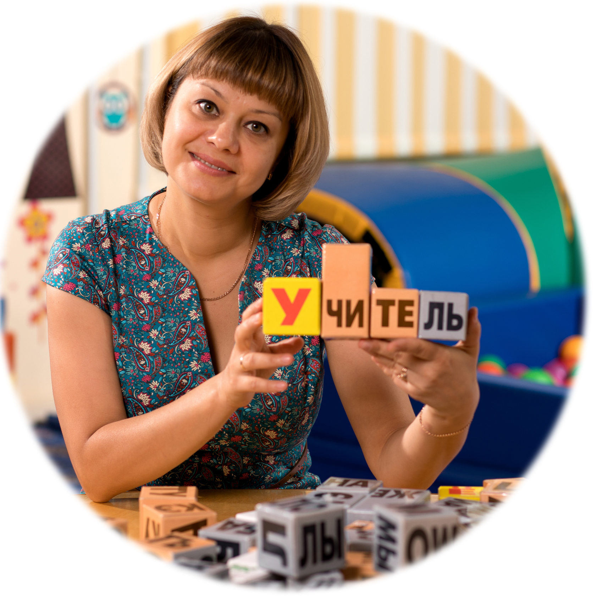

О студии
Родилась безумная идея, когда я сидела дома в декретном отпуске с сыном. После упорных трудов и больших вложений появилась студия раннего развития "Наши детки" это было 13 лет назад. На сегодняшний день в студии работает 22 группы, в которых занимается более 200 детей. Родилась безумная идея, когда я сидела дома в декретном отпуске с сыном. После упорных трудов и больших вложений появилась студия раннего развития "Наши детки" это было 13 лет назад. На сегодняшний день в студии работает 22 группы, в которых занимается более 200 детей. Родилась безумная идея, когда я сидела дома в декретном отпуске с сыном. После упорных трудов и больших вложений появилась студия раннего развития "Наши детки" это было 13 лет назад. На сегодняшний день в студии работает 22 группы, в которых занимается более 200 детей.
Методики которые я использую
Немного обо мне
Здравствуйте! Давайте знакомиться . Я – Анна ! Моё первое образование – Режиссёр постановщик досуговых программ и театрализованных представлений, второе – педагог психолог. Обе эти специальности не дали мне сидеть на скучном месте работы. Моя голова всегда не давала мне спать спокойно, нужно было реализовать зреющие в ней идеи… Я долго искала себя и вот!!! Родилась безумная идея, когда я сидела дома в декретном отпуске с сыном. После упорных трудов и больших вложений появилась студия раннего развития "Наши детки" это было 13 лет назад. На сегодняшний день в студии работает 22 группы, в которых занимается более 200 детей.